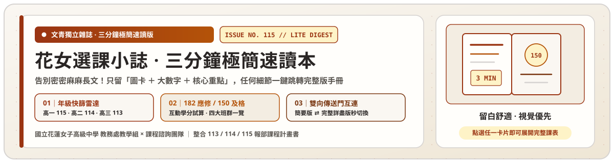
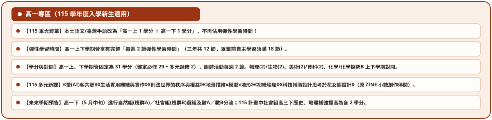
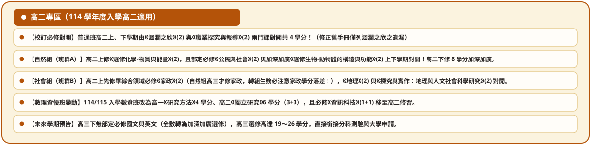
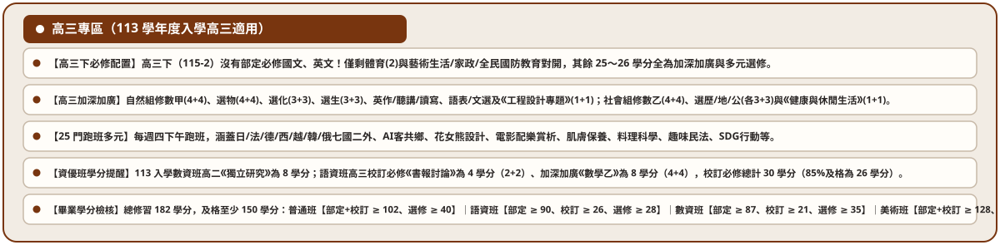
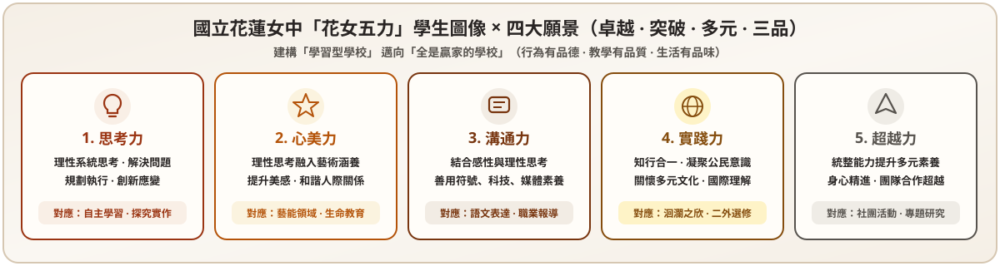
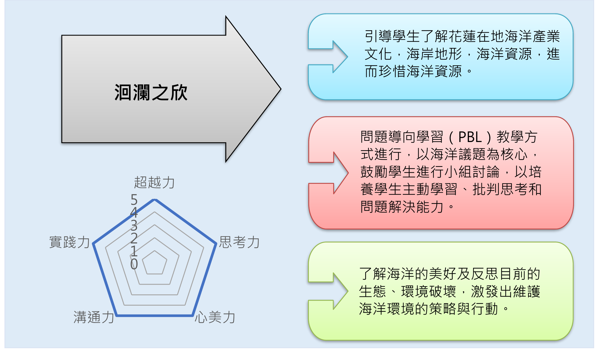
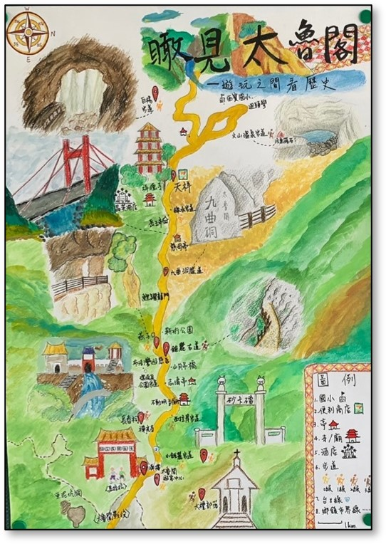
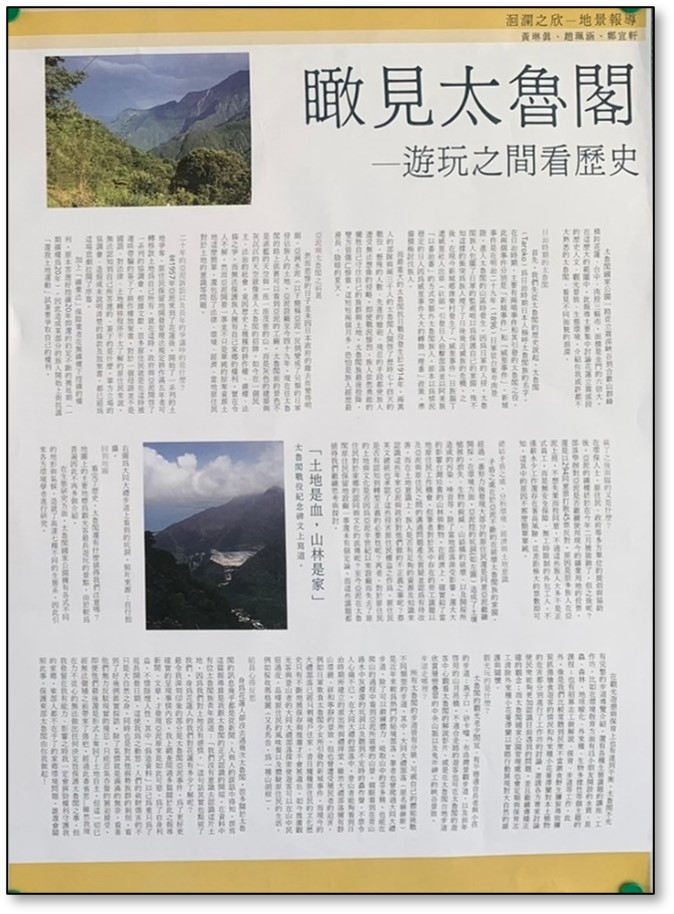
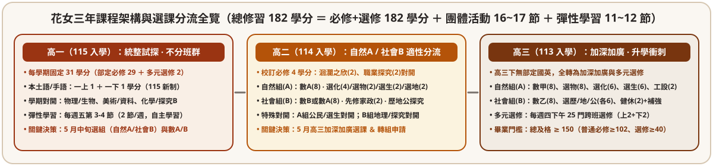

SPREAD 00 ‧ COHORT QUICK RADAR
卷首｜115 學年度三屆學生「這學期必做清單」
同時在校的三個年級分別適用 115（高一）、114（高二）、113（高三）三份課程計畫書。先看妳所屬年級的本學期三件大事，想看完整科目表直接點卡片下方傳送門：
115 學年度入學 ‧ 現高一
高一新生：探索志趣 ＆ 下學期選組

- 上下學期各選 1 門多元選修（每學期 2 學分，共 30 門課可選）。
- 高一下（5～6 月）正式選組：決定高二進入自然班群 A（修數 A）或社會班群 B（修數 A 或數 B）。
- 自主學習滿 18 節：三年合計須完成至少 18 節自主學習。
114 學年度入學 ‧ 現高二
高二同學：班群分流 ＆ 校訂必修

- 校訂必修（4 學分）：普通班高二修習《洄瀾之欣》(2) 與《職涯探索與實踐》(2) 上下對開。
- 自然 A vs 社會 B 對開差異：社會組高二上修《家政》(2)；自然組高三才修《家政》(2)。
- 學習歷程每學期勾選 6 件：含課程學習成果與多元表現認證。
113 學年度入學 ‧ 現高三
高三準畢業生：150 學分檢核 ＆ 升學衝刺

- 113 屆專屬差異：自然組高三《生物-演化》(1)＋《化-有機》(1)；社會組高三含《邏輯》(1)＋《地科-環境》(1)。
- 畢業門檻總檢核：立即使用下方「三種樣態畢業學分試算器」確認是否達 150 學分。
- 大考與申請大學：1 月學測（X）、5 月申請入學（P1+P2）、7 月分科測驗（Y）。
SPREAD 01 ‧ VISION & SCHOOL-REQUIRED COURSES
壹｜花女五力圖像 ＆《洄瀾之欣》校訂必修
以「溫柔同理、美感創造、磊落自信、思辨力行、協力共好」五大核心素養為基底，普通班於高二修習 4 學分校訂必修；資優班與美術班則修習專屬特殊需求領域必修。

普通班校訂必修（共 4 學分）
《洄瀾之欣》(2) ＋《職涯探索與實踐》(2)
- 《洄瀾之欣》（2 學分）：走讀花蓮在地文史、自然地景與田野調查，完成手繪地圖或地景報導（最適合認證為「課程學習成果」！）。
- 《職涯探索與實踐》（2 學分）：結合 SDGs 永續議題、學群探索與生涯實踐企劃。
特殊班校訂必修（特殊需求領域）
語資班(30) ‧ 數資班(24) ‧ 美術班(8)
- 語文資優班（30 學分）：專題研究、獨立研究、領導才能、情意發展、外語溝通與跨文化理解。
- 數理資優班（24 學分）：科學方法與專題研究、高階數理實作與獨立研究。
- 美術資優班（8 學分）：藝術鑑賞、策展實務與特殊需求領域（另加 60 學分部定藝才專長必修）。

《洄瀾之欣》課程架構與學生五力雷達圖
| 圖 1-1：《洄瀾之欣》110-2 票選得獎作品—手繪地圖 | 圖 1-2：《洄瀾之欣》110-2 票選得獎作品—地景報導 |
|---|---|
|
 |
 |
SPREAD 02 ‧ 3 GRADUATION PATTERNS & CALCULATOR
貳｜三年 182 學分架構 ＆「3 種畢業檢核樣態」即時試算
花女三年應修總學分為 182 學分，畢業最低及格總學分為 150 學分。全校依班別分為「普通班（自然／社會同掛）」、「特殊班：語資／數資同掛」、「特殊班：美術班獨立樣態」共 3 種畢業檢核樣態：

| 畢業檢核樣態（共 3 種樣態） | 適用班別 | 應修總分 | 畢業總門檻 | ① 必修及格門檻 | ② 選修及格門檻 | 完整課表 |
|---|---|---|---|---|---|---|
| 樣態一｜普通班（自然/社會同掛） | 自然班群 A ‧ 社會班群 B | 182 | ≥ 150 學分 | 部定必修(118)＋校訂必修(4) 合併 ≥ 102 學分 | 選修(60) ≥ 40 學分 | 六學期課表 → |
| 樣態二｜特殊班：學術資優班（語資/數資同掛） 部定一般≥80% ‧ 校訂特需≥85% ‧ 選修≥70% |
語文資優班 | 182 | ≥ 150 學分 | 部定一般(112) ≥ 90 (80%) ＋ 校訂特需(30) ≥ 26 (85%) | 選修(40) ≥ 28 學分 (70%) | 語資課表 → |
| 數理資優班 | 182 | ≥ 150 學分 | 部定一般(108) ≥ 87 (80%) ＋ 校訂特需(24) ≥ 21 (85%) | 選修(50) ≥ 35 學分 (70%) | 數資課表 → | |
| 樣態三｜特殊班：藝才資優班（美術班獨立樣態） | 美術資優班 | 182 | ≥ 150 學分 | 部定(一般86+藝才專長60)＋校訂特需(8) 合併 ≥ 128 學分 | 選修(28) ≥ 14 學分 (50%) | 美術課表 → |
互動式畢業學分快速試算器（182 應修學分 ‧ 150 及格門檻 ‧ 三種班群樣態）
→ 對照第貳章畢業條件檢核表 (#ch2-6)花女各班別依課程結構分為「三種畢業檢核樣態」：請先點選妳所屬的班別樣態，再輸入目前累積或預計取得的及格學分數：
總及格學分：154 / 150（達標）
必修合計（部定+校訂）：106 / 102（應修122，達標）
選修學分：48 / 40（應修60，達標）
恭喜！符合【普通班（自然/社會班群）】畢業學分門檻
SPREAD 03 ‧ TRACKS, MATH A/B & ELECTIVES
參｜自然組 vs 社會組 ‧ 數 A vs 數 B ‧ 多元選修與 34 社團
高一下學期末將進行班群選組與高二數學分流。用三張重點卡掌握核心差異：
班群分流（高二起）
自然班群 A vs 社會班群 B
- 自然班群 A（理工醫農生醫）：加深加廣主修物理、化學、生物、地科與數 A／數甲。
- 社會班群 B（文法商管社心）：加深加廣主修歷史、地理、公民探究與數 A 或數 B（高三數乙）。
- 轉組提醒：社會組高二上修《家政》(2)，自然組高三才修；轉組前請先看轉組對照表！
高二數學分流
高二數 A vs 數 B 怎麼選？
- 數學 A（高強度空間與微積分銜接）：適合資訊、工程、數理化、醫牙藥及頂大商管財金科系。
- 數學 B（設計、人文、傳播與實務模型）：含平面透視、球面經緯度、單利複利，適合文史哲法政藝設。
- 跨考原則：修數 A 較易跨考數 B，但修數 B 若高三想跨考數甲需自行補足空間向量與矩陣。
多元選修 ＆ 彈性 ＆ 社團
30 門高一多元選修 ‧ 18 節自主學習
- 多元選修：每學期 2 學分（三階段網路選課：初選二階段志願序 ＋ 開學加退選）。
- 彈性學習（每週 3 節）：三年須完成至少 18 節自主學習並通過指導老師審核。
- 34 個繽紛社團：學術、音樂、藝文、服務、康樂、體育六大類。
SPREAD 04 ‧ CAREER TRIANGLE & 18 CLUSTERS
肆｜生涯規劃金三角 ＆ 大學十八學群選組導航
結合高一「大考中心興趣量表（Holland 六碼）」與「新編多元性向測驗」，快速對準十八學群與建議班群：
SPREAD 05 ‧ LEARNING PORTFOLIO & ADMISSIONS
伍｜學習歷程檔案（每學期 6 件勾選）＆ 四大升學管道
學習歷程檔案是申請大學的「P1 備審核心」，按學期穩定累積最輕鬆：
課程學習成果（有學分課程）
每學期認證至多 6 件 ‧ 每年勾選 6 件
- 可上傳科目：部定必修、校訂必修（如《洄瀾之欣》）、加深加廣選修、多元選修。
- 三年至多勾選 18 件提交至中央資料庫，高三申請大學時再從中挑選 3 件送審。
多元表現（自主學習／社團／競賽）
每學年勾選至多 10 件
- 包含項目：彈性學習時間之「自主學習成果」、社團活動、幹部經歷、競賽、檢定、營隊志工。
- 不須任課老師認證，但須於每學年規定時間內完成上傳與勾選（三年至多 30 件，高三挑 10 件）。
四大升學管道 ＆ 大考範圍
特殊選才 ‧ 繁星 ‧ 申請 ‧ 分發
- 學測（X，高三寒假 1 月）：考部定必修（國、英、數A、數B、社、自）。
- 申請入學（3～5 月）：學測 X ＋ 學習歷程 P1 ＋ 二階面試筆試 P2。
- 分科測驗（Y，高三暑假 7 月）：考加深加廣選修（數甲、數乙、物、化、生、歷、地、公）。
SPREAD 06 ‧ TIMELINE & COURSE CONSULTATION
陸｜選課／選組／轉組重要期程 ＆ 課諮師預約管道
遇到選課或轉組問題，「班導師、專任輔導教師、課程諮詢教師」金三角隨時陪妳討論：
多元選修三階段選課
初選一階 ➔ 初選二階 ➔ 加退選
- 第一階段（期末前）：上網登記志願序（非先搶先贏，請填滿志願）。
- 第二階段：第一階段未中選同學進行二階志願分發。
- 加退選（開學第 1～2 週）：特殊原因申請加退選（須經課諮師或教務處核章）。
選組與寒暑假轉組
高一下選組 ‧ 高二寒暑假轉組
- 高一下（5～6 月）：舉辦課程說明會、團體課諮，繳交家長同意之選組表。
- 寒假／暑假轉組申請：必須完成「導師 ➔ 輔導老師 ➔ 課程諮詢教師」三關晤談簽章方可申請。
SPREAD 07 ‧ TOP FAQ HIGHLIGHTS
柒｜原來不是只有我不懂 — 學長姐最常問的 5 大核心問題
精選自手冊第柒章 23 題 Q&A 中最常被問到的 5 題，想看全部 23 題詳解請點下方傳送門：
Q1：如果高二志趣改變決定轉組，會不會因為學分不足而不能畢業？
只要提早規劃就不用擔心！請先用上方「互動式畢業學分快速試算器（3 種樣態）」檢核必修與選修學分，並特別留意自然組與社會組《家政》(2) 及高二對開科目的學分落差；未修習之必修科目可透過暑期補修專班完成。查看轉組科目對照表 →
Q2：自主學習一定要有嗎？如果自主學習計畫書未審查通過怎麼辦？
是的！新課綱規定每位高中生三年間至少需完成 18 節以上的自主學習。若計畫初審未通過，學校「自主學習審查小組」與指導老師會協助妳修訂計畫內容直到通過為止。查看彈性學習規定 →
Q3：哪些課程可以上傳到「課程學習成果」？微課程或自主學習算哪一類？
有學分且任課老師會評分的課程（部定必修、校訂必修《洄瀾之欣》等、加深加廣選修、多元選修）經任課老師認證後列入「課程學習成果」；沒有學分的彈性學習（自主學習、微課程）與社團活動則列入「多元表現」。查看學習歷程詳解 →
Q4：高三才發現選修課跟想申請的大學科系沒有完全對應怎麼辦？
可向輔導老師或課諮師尋求協助，從「多元表現（自主學習、營隊、競賽）」展現對該領域的熱情，並在「學習歷程自述」中真誠說明自己探索、轉折到確立目標科系的心路歷程。查看課程疑惑篇 Q1–Q5 →
Q5：對選課、選組或學習歷程有疑問時，該去哪裡找誰？
選課系統與開課加退選找教務處教學組；學分採計、成績與轉組重補修找教務處註冊組；生涯探索、興趣測驗與升學面試找輔導室；個人化選課規劃則找課程諮詢教師！查看各處室問題對口表 →